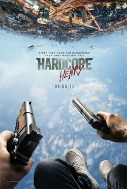

The genetics
Genetics appears only through cloning. Jimmy, a quadriplegic scientist who once worked for the villain, operates a series of clones of himself, each built around a different side of his personality, by remote headset; they guide and help Henry, and several are killed along the way. The film never explores how they were made, and its real science-fiction subject is cybernetics and memory manipulation: Henry's prosthetic body and the army of cyborg soldiers programmed with his memories. The clones are a device that lets one actor play many comic variations of the same helper.
The story
Told entirely from its hero's point of view, the film opens as Henry wakes mute and amnesiac in a laboratory on an airship, where the scientist Estelle, who says she is his wife, fits him with cybernetic limbs. Mercenaries led by the psychokinetic Akan raid the lab, and Henry and Estelle escape to Moscow, where she is abducted. Henry is guided by Jimmy, who keeps dying and reappearing in different guises, through a series of fights to find a power pump for his limbs and to rescue Estelle. Jimmy turns out to be a paralysed scientist, crippled by Akan, who controls a set of clones of himself through a headset. At Akan's headquarters Henry faces an army of cyborg super-soldiers given his memories and learns that Estelle is Akan's wife: his ordeal was a test of soldiers who will do anything to save their "wives". Henry kills Akan and Estelle.